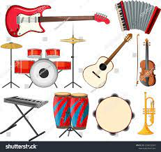

INSTRUMENTOS
Un instrumento musical es un sistema compuesto por la combinación de uno o más sistemas resonantes y medios para su vibración, construido con el fin de producir sonido en uno o más tonos que puedan ser combinados por un intérprete para producir música.
| # | Nombre | Marca |
|---|---|---|
| 1 | INSTRUMENTOS DE VIENTO | Jupiter |
| 2 | INSTRUMENTOS DE CUERDA | Alhambra |
| 3 | INSTRUMENTOS DE PERCUSION | Yamaha |
| 4 | INSTRUMENTOS DE CUERDA PERCUTIDA | Roland |
| 5 | INSTRUMENTOS ELECTRICOS | C.F. Martin & Co |